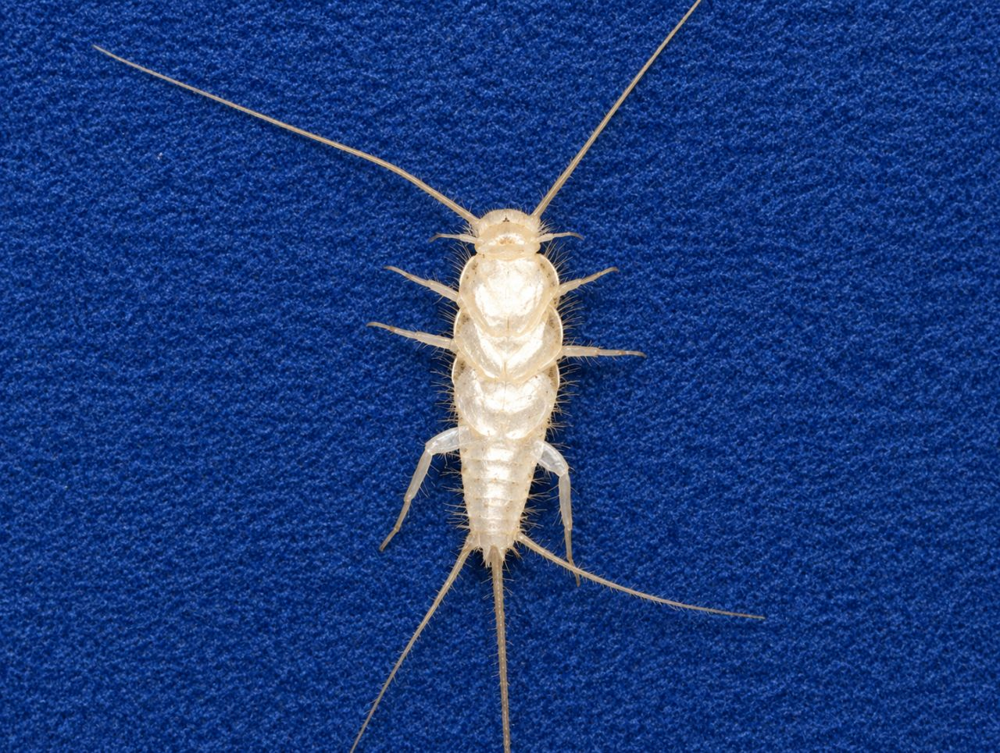
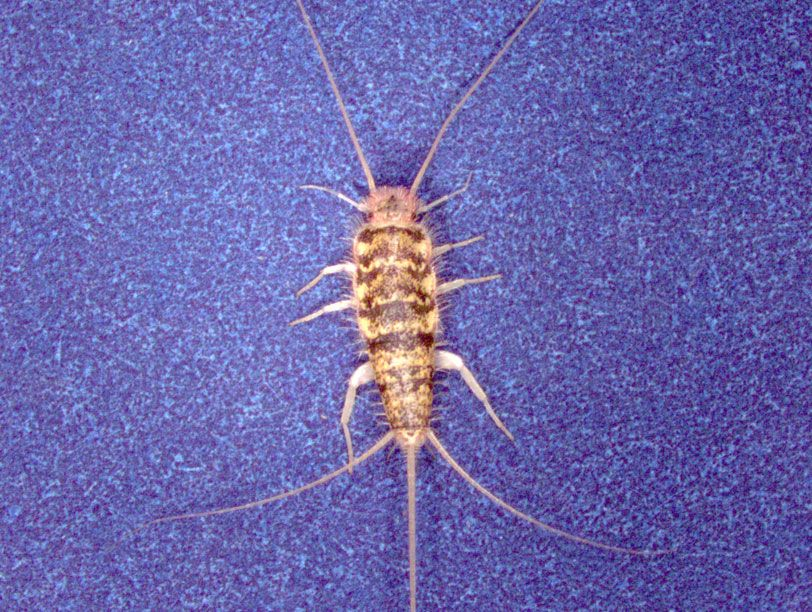

آیا تا به حال در گوشههای تاریک حمام یا زیر سینک آشپزخانه، حشرهای نقرهفام و سریع را دیدهاید که با دیدن نور، با سرعتی برقآسا فرار میکند؟ به احتمال قریب به یقین، شما با سیلور فیش (Silverfish) یا همان ماهی نقرهای آشنا شدهاید. این حشرات کوچک و قدیمی، اگرچه برای انسان خطری مستقیم ندارند، اما میتوانند به کتابها، کاغذدیواریها، لباسها و مواد غذایی شما آسیب جدی وارد کنند.


سیلور فیش حشرهای شبزی، بدون بال و از دستهی بیدمَکان (Zygentoma) است که نام علمی آن Lepisma saccharina میباشد. ظاهر این حشره کاملاً شبیه به ماهی است؛ بدنی کشیده و نقرهفام، دو شاخک بلند در جلو و سه زائدهی باریک در انتهای دم دارد که هنگام حرکت، حالتی شبیه به شنای ماهی به آن میدهد.
این حشرات میتوانند تا ۸ سال عمر کنند و در طول زندگی خود بیش از ۵۰ بار پوستاندازی کنند. برخلاف تصور عموم، وجود سیلور فیش نشانهی کثیفی خانه نیست، بلکه هشداری جدی برای وجود رطوبت بالا در محیط است.
سیلور فیشها به دلیل شبزی بودن و سرعت بالایشان، به سختی دیده میشوند. با این حال، نشانههای واضحی برای تشخیص آلودگی وجود دارد:
کنترل سیلور فیش نیازمند یک رویکرد مدیریت تلفیقی آفات (IPM) است. به عبارت دیگر، ترکیبی از روشهای پیشگیرانه، طبیعی و در صورت لزوم، شیمیایی، بهترین نتیجه را به همراه خواهد داشت.
اولین و مهمترین گام، کاهش رطوبت محیط است. با نصب فنهای تهویه، استفاده از رطوبتگیر و تعمیر فوری لولههای نشتی، محیط را برای زندگی سیلور فیش غیرقابل تحمل کنید.
مواد غذایی مانند آرد، غلات و بیسکویت را در ظروف دربدار پلاستیکی نگهداری کنید. کتابها و مدارک را در محلهای خشک و ترجیحاً در جعبههای پلاستیکی قرار دهید. همچنین با جاروکشی مرتب پشت وسایل، تخمها و ذرات غذایی را از بین ببرید.
تلههای چسبنده (استیکی) میتوانند برای شناسایی نقاط آلوده و کاهش جمعیت سیلور فیش مفید باشند. همچنین میتوانید با قرار دادن یک شیشه با دیوارهی صاف و طعمهای مانند آرد در کف آن، یک تلهی ساده بسازید.
استفاده از اسانسهای طبیعی مانند نعناع، آویشن یا اسطوخودوس میتواند به دلیل بوی تند، سیلور فیش را دفع کند. کافی است چند قطره از اسانس را در نقاط پرخطر اسپری کنید.
اگر با وجود رعایت نکات پیشگیرانه، همچنان با مشکل سیلور فیش دست و پنجه نرم میکنید، زمان آن رسیده که از یک خدمات سمپاشی حرفهای استفاده کنید.
چرا سمپاشی خانگی معمولاً شکست میخورد؟
سیلور فیشها در شکافهای بسیار ریز و نقاط صعبالوصول پنهان میشوند و اسپریهای معمولی به آنجا نفوذ نمیکنند. همچنین این حشرات بسیار مقاوم هستند و برای از بین بردن تخمهایشان، نیاز به روشهای تخصصی داریم.
هزینه سمپاشی سیلور فیش به عوامل متعددی بستگی دارد. برای دریافت برآورد دقیق و متناسب با شرایط ملک شما، میتوانید از مشاوره رایگان کارشناسان ما بهرهمند شوید. بهطورکلی، عواملی مانند مساحت محیط، شدت آلودگی و نوع روش کنترل (طعمهگذاری یا سمپاشی) در قیمتگذاری نهایی تأثیرگذار هستند.
| عامل | تأثیر بر هزینه |
|---|---|
| مساحت و نوع مکان | منازل، ویلاها، ادارات و مراکز صنعتی هزینههای متفاوتی دارند. |
| شدت آلودگی | آلودگی شدید نیاز به عملیات بیشتر دارد. |
| نوع روش | طعمهگذاری، سمپاشی موضعی یا ترکیبی. |
| تعداد جلسات | معمولاً یک جلسه کافی است، اما در موارد شدید ممکن است نیاز به بازدید مجدد باشد. |
خیر، سموم و طعمههای استفادهشده توسط شرکت نانوفناوران با رعایت کامل استانداردهای بهداشتی انتخاب میشوند. همچنین در هنگام سمپاشی، افراد و حیوانات از محیط خارج میشوند و پس از تهویه کامل، محیط کاملاً ایمن است.
در روش طعمهگذاری، اثر تدریجی است و جمعیت حشره طی ۱ تا ۲ هفته به طور کامل فروپاشی میشود. در روش سمپاشی موضعی، اثر فوری است.
استفاده از اسپریهای خانگی معمولاً مؤثر نیست و فقط حشرات سطحی را از بین میبرد. همچنین استفاده نادرست از سموم میتواند برای سلامتی خطرناک باشد. روشهای تخصصی مانند طعمهگذاری نیاز به دانش و تجربه دارد.
در روش طعمهگذاری نیازی به ترک منزل نیست. در روش سمپاشی موضعی، معمولاً ۲ تا ۴ ساعت باید محیط را ترک کنید تا سموم تهویه شوند.
اگر رطوبت محیط کنترل شود و نکات پیشگیری رعایت شود، احتمال بازگشت بسیار کم است. شرکت نانوفناوران خدمات خود را با ضمانت ارائه میدهد.
سیلور فیش یک آفت مزمن و پنهانکار است که با روشهای معمولی بهسادگی از بین نمیرود. شرکت سمپاشی نانوفناوران بهداشت تهران با بهرهگیری از روشهای علمی روز دنیا مانند طعمهگذاری تخصصی با ایندوکساکارب، تجربهی بالا در کنترل رطوبت و آفات و همچنین استفاده از سموم استاندارد و ایمن، بهترین گزینه برای ریشهکنی قطعی این حشره است.
🚀 همین حالا اقدام کنید:
📞 تماس فوری: ۰۹۱۲۰۷۰۵۷۴۶
💬 درخواست مشاوره رایگان: از طریق واتساپ یا ایتا
🔗 مشاهده سایر خدمات: کنترل آفات مسکونی